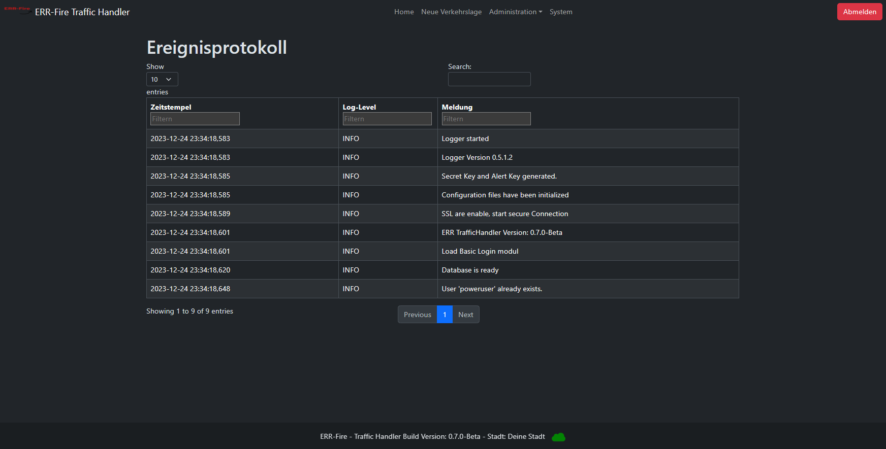

Erste Schritte
Login
Beim Aufrufen des TrafficHandler, landet man auf der Login-Seite.
Mit folgenden Standard-Benutzerdaten kann man sich nun anmelden.
Benutzername: poweruser
Passwort: powerAdmin
⚠️ Der Administrator wird aufgefordert, unmittelbar nach dem Einloggen das Passwort zu erneuern.

Standard Ansicht
Nachdem Sie sich erfolgreich angemeldet haben, gelangen Sie zur Startseite. Hier finden Sie ein übersichtliches Menüband, über das Sie nahtlos zwischen verschiedenen Seiten wechseln können. Auf dieser Seite werden Ihnen auch der aktuell angemeldete Benutzer und die zugehörige Rolle angezeigt.
Update Server
In der Fußzeile wird eine symbolische Wolke angezeigt, deren Farbe entweder "grün" oder "grau" ist und die die Verbindung zum Update-Server repräsentiert. Der Update-Server, der über das Internet erreichbar ist, liefert der Anwendung die aktuell verfügbare Versionsnummer. Die Anwendung führt dann lokal eine Überprüfung durch, um festzustellen, ob die auf dem Update-Server verfügbare Version höher ist als die aktuell verwendete. Falls dies der Fall ist, erhalten Sie auf der Startseite eine Benachrichtigung darüber, dass eine neue Version verfügbar ist.
⚠️ Die Versionsnummer Ihrer Anwendung wird zu keinem Zeitpunkt an uns übermittelt.
⚠️ Zusätzlich zu den Informationen auf der Startseite werden Sie auch auf anderen Wegen benachrichtigt, wenn eine neue Version verfügbar ist.
Dadurch ist sichergestellt, dass eine Internetverbindung des Servers nicht zwingend erforderlich ist.
Die Startseite präsentiert zudem eine Karte von OpenStreetMap, auf der der aktuelle Standort durch einen Marker markiert ist. Aktive Verkehrslagen werden durch entsprechende Verkehrszeichen visualisiert. Durch Anklicken dieser Verkehrszeichen erhalten Sie eine kurze Information über die aktuelle Verkehrslage.
Im Abschnitt "Aktive Verkehrslage" sind sämtliche erfassten Verkehrslagen aufgeführt. Dabei werden folgende Informationen dargestellt.
- Art
- Titel
- Startdatum
- Enddatum
- Beschreibung
- Koordinaten

Neue Verkehrslage hinzufügen
Innerhalb dieser Seite haben Sie die Möglichkeit neue Verkehrslagen einzutragen.
⚠️ Derzeit ist dies ausschließlich über die Webseite möglich. Langfristig ist geplant, eine Schnittstelle bereitzustellen, um auch Fremdsysteme integrieren zu können.
Es handelt sich bei allen Feldern um Pflichtfelder.
Für die Eingabe von Koordinaten, die auf der Karte dargestellt werden sollen, hat sich die folgende Seite als besonders praktikabel erwiesen.
(https://www.gpskoordinaten.de/)

Verkehrslage löschen
⚠️ Verkehrslagen löschen sich aktuell nach Ablauf des Enddatum nicht selbständig.
Das Löschen von Verkehrslagen kann über diese Seite erfolgen und ist ausschließlich Benutzern vorbehalten, die der Berechtigungsgruppe (Admin oder Editor) zugeordnet sind.

Benutzerverwaltung
⚠️ Hier wird die lokale Benutzerverwaltung erklärt. NICHT über IAM!
Innerhalb der Anwendungen können weitere User erstellt bzw. gelöscht werden, Passwörter geändert als auch Benutzergruppen angepasst werden. Die Benutzerverwaltung ist dabei den User(n) mit der Rolle Admin vorbehalten.
Anbei finden Sie eine Übersicht über die Rollenberechtigung.
⚠️ Gehen Sie sorgfältig mit der Rollenvergabe um.
| Rolle/ Möglichkeiten |
Admin | Editor | Viewer |
|---|---|---|---|
| Zugang zum System | x | x | x |
| Erstellen neuer Verkehrslagen | x | x | o |
| Verkehrslagen löschen | x | x | o |
| Übersicht Benutzer | x | o | o |
| Anpassung Benutzer | x | o | o |
| Systemdaten | x | o | o |
| Alarmsystem | x | o | o |
| Ereignisprotokoll | x | o | o |

Ereignisprotokoll
⚠️ Das Ereignisprotokoll und das Log ist auf Englisch!
Das Ereignisprotokoll bietet eine übersichtliche Darstellung der durchgeführten Aktionen innerhalb der Anwendung. Hierbei werden sämtliche relevanten Informationen erfasst und auf dieser Seite präsentiert. Autorisierte Benutzer haben die Möglichkeit, nach bestimmten Ereignissen zu suchen, die Liste nach ihren Präferenzen zu sortieren und eine strukturierte Darstellung zu wählen, um die gewünschten Informationen schnell und präzise zu finden.
Parallel zum Ereignisprotokoll wird ein Logfile erstellt main.log, das sämtliche Anpassungen in einer Datei festhält. Diese Datei bietet eine umfassende Übersicht über alle durchgeführten Änderungen und stellt sicher, dass jede Modifikation in der Anwendung dokumentiert wird.
